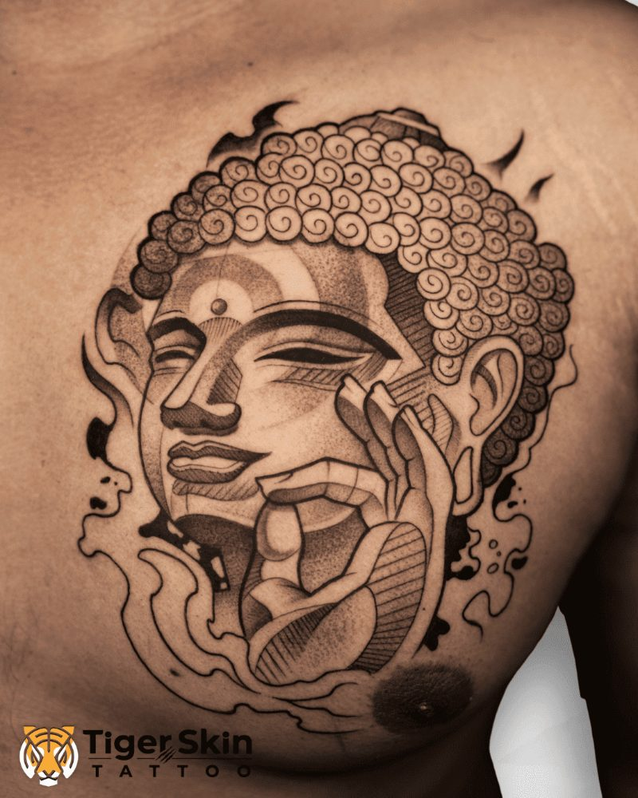
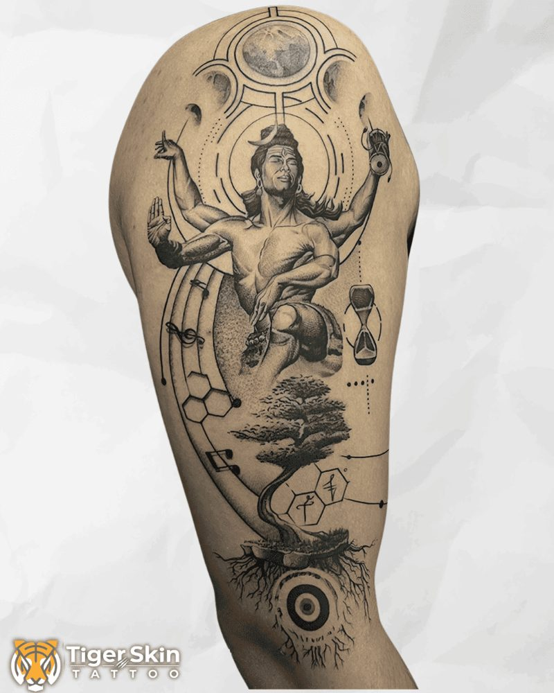
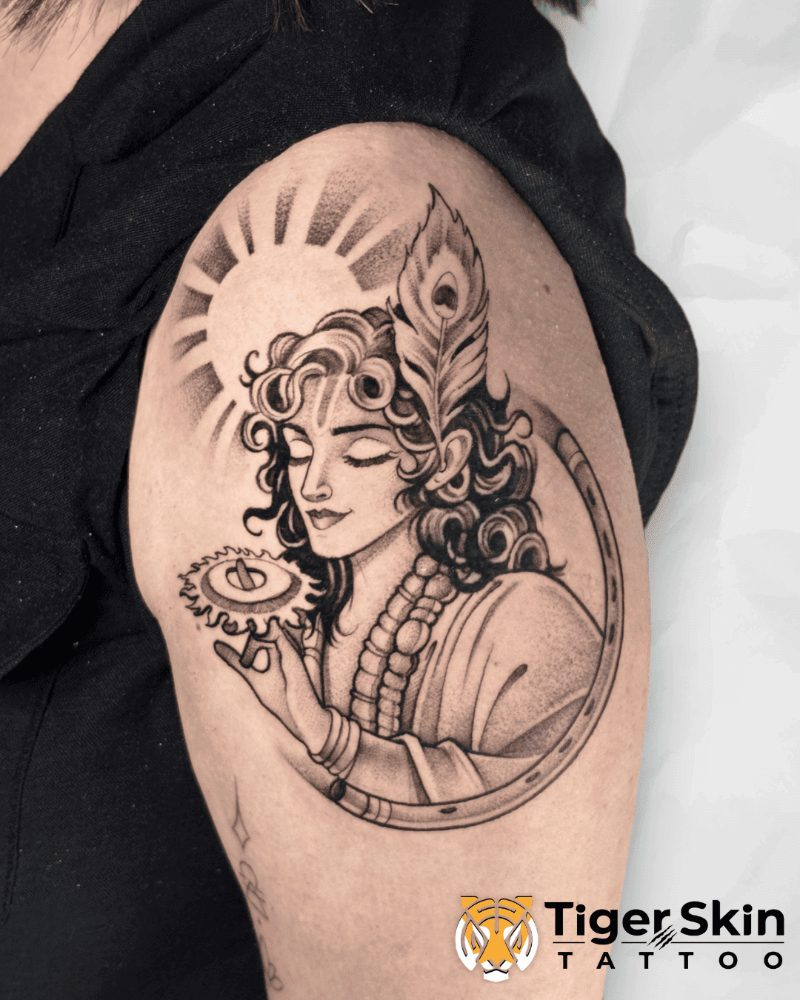

Tiger Skin Tattoos is Thane's most aesthetic tattoo studio, a calm, cozy space where every client feels at home. No tattoo is rushed here, whether it's a small piece or a full-day session. You get the artist's complete focus from start to finish.
Devotional tattoos are among the most meaningful work we do. These aren't designs pulled from a flash sheet, they're custom pieces that carry real weight, and they deserve to be executed at the level the subject demands.
Swarain has done more Shiva and Mahadev tattoos than any other single subject. They are, consistently, the most requested devotional work at Tiger Skin Tattoos. Trishul, the third eye, the Ganga, Nandi, every element planned and placed with intention.
Whether it's a meditative Shiva in black and grey realism, a vibrant Radha Krishna in colour, or a Ganesh done with the kind of detail that holds for decades, drawn from scratch, drawn for you.
The most in-demand devotional work at our studio. Multiple large-scale Shiva tattoos completed, each one composed fresh, no two are identical.
Devotional realism in colour or black and grey, rendered with the reverence the subject deserves.
Durga Ma, symbolic trishuls, aum, chakras, any devotional concept rendered in full custom realism. Tell us your idea and we'll design it.
Every piece below was drawn from scratch. No stock references, no copied designs.



Every design is created specifically for your placement, composition, proportions, flow. Not resized from something else, not traced from a reference photo.
Swarain Pawar has been tattooing professionally for over 8 years and has completed more than 2,000 pieces. The consistency of the finished work reflects that experience.
Every custom tattoo starts with a conversation. We'll understand your idea, advise on size and placement, and talk honestly about what will work best on your skin.
106, 1st Floor, JVM's Corner Stone, Hariniwas Circle, easy to reach from Thane station, Mulund and Ghodbunder Road. Appointment-only, clean and private.
Custom work at Tiger Skin Tattoos is priced transparently:
Per square inch: ₹1,000/sq inch, most used for medium custom pieces
Hourly rate: ₹5,000/hour, for larger or more detailed sessions
Full-day session: ₹32,000, sleeves, full backs, large devotional pieces
Deposit: 10–20% of estimated total to confirm your booking
The free consultation gives you an accurate quote for your specific piece. No pressure, no commitment.
Book a free consultation, online, or call/WhatsApp us directly. Bring your ideas and any reference images. We'll discuss placement, size, and design direction, and give you a clear quote. A deposit secures your session date.
Yes. The custom design is drawn before your appointment and shared with you for review. We make adjustments until you're happy. Minor tweaks on the day are normal and expected.
Devotional work is some of the most requested at our studio. Shiva/Mahadev is the single most common request, Swarain has done multiple large-scale Mahadev tattoos, each one custom-composed. Radha Krishna, Ganesh, Durga, trishul, all done with the care the subject deserves.
18 years and above. Valid ID required at your appointment.
Tell us your idea. Consultations are free. The fastest path is a WhatsApp message with a rough description or any reference images you have.